原文连接:https://www.cnblogs.com/lixinjie/p/taste-spring-006.html
现在的Spring相关开发都是基于SpringBoot的。
最后在打包时可以把所有依赖的jar包都打进去，构成一个独立的可执行的jar包。如下图13：
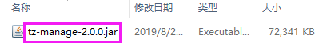
使用java -jar命令就可以运行这个独立的jar包。如下图14：
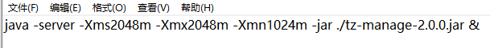
这个jar包的执行入口就是一个main函数，典型的格式如下：
@SpringBootApplication
public class TasteSpringApplication {
public static void main(String[] args) {
SpringApplication.run(TasteSpringApplication.class, args);
}
}
从代码中可以得知，SpringApplication这个类就是SpringBoot的总入口。
以上这些内容，早已是路人皆知的事情了，这里只是再赘述一遍。
进入SpringApplication这个类的源码里，首先看到的就是几个application context所使用的类。
首先是AnnotationConfigApplicationContext，这是基于注解的非web应用使用的类，它是spring-context里面的类，现在也用于SpringBoot中。
这表明对于非web应用来说，采用传统的Spring构建，或是采用现在的SpringBoot构建，核心部分并没有什么本质区别。毕竟连类都是用的同一个。
再看就是AnnotationConfigServletWebServerApplicationContext，这是基于注解的web应用使用的类，注意，这个类是SpringBoot里的类。
其实大家都知道，在还没有SpringBoot时，基于传统Spring构建web应用时使用的是AnnotationConfigWebApplicationContext这个类。
这个类位于spring-web中，显然它是Spring里面的类。（注：本文中所说的Spring指的是SpringFramework）
这里有一个问题，不知你是否发现，从Spring到SpringBoot，非web应用使用的类没有变，web应用使用的类改变了，为啥呢？
这个问题其实很简单，从它们的启动方式的差异就能很好的说明。
传统Spring构建的web应用，会打成一个war包，放入tomcat下面。
先启动tomcat，然后tomcat再去加载它下面的web应用（即war包）。
SpringBoot构建的web应用，会打成一个jar包，采用内嵌的tomcat。
先启动jar包，会进入SpringBoot中，然后再去启动tomcat。
因为现在SpringBoot要来负责启动和停止web server，这和传统Spring完全不同，所以它要自己实现一个web application context所使用的类。
由此我们可以推断出，这个类里一定有关于web server启动和停止的相关内容。
再来观察一个细节，没错，就是类名称。
传统Spring使用的类名称可以提炼出一个关键词，就是Web。SpringBoot使用的类名称可以提炼出的关键词是ServletWebServer。
前者只有Web，说明只关注web的问题，后者除了Web外还有Server，说明除了关注web外还要关注服务器，即tomcat、jetty等这些web服务器。
由此可见，从类名称上的解释和刚刚从启动方式上的解释是吻合的，是一致的。
这也说明，“时刻关注细节，你将发现更多”。这句话不仅可以用在工作当中，亦可以用在学习中、生活中。
细心的同学又会发现，后者中还有一个Servlet呢，这又怎么解释呢？
这说明这个WebServer是基于Servlet实现的。难道还有不是基于Servlet的吗？有啊，那就是基于Reactive（响应式或反应式）的。
响应式使用的类是这个AnnotationConfigReactiveWebServerApplicationContext。可以仔细对比一下名字。
Spring从5.x引入了响应式编程。这里不做深入讨论，需要的话可以去看“编程新说”这个号之前的文章。
接着我们去源码里看看，来证实一下我们的猜想。进入ServletWebServerApplicationContext类，就是刚刚那个类的父类。
首先它定义了一个WebServer，如下图01：
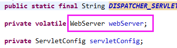
其次又创建了这个WebServer，如下图02：
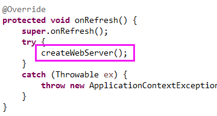
接着又启动了这个WebServer，如下图03：
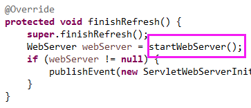
最后又关闭和释放了这个WebServer，如下图04：
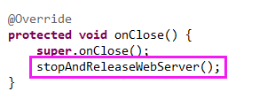
由此证明了我们的猜想，确实有关于web服务器的“全套”操作。
现在SpringBoot翻身成了主人，它不仅可以启停web服务器，还可以选择web服务器，是用tomcat、jetty还是netty，都是可以配置的。爽吧。
Spring的核心就是IOC容器，容器所作的事情就是bean定义的注册，bean的实例化、初始化、依赖的装配，bean方法的调用，bean实例的销毁。
我们先来看看bean定义的注册吧。
首先看下传统Spring的，也就是AnnotationConfigWebApplicationContext这个类的。
先定义两个成员变量，存储要注册的类和要扫描的包，如下图05：
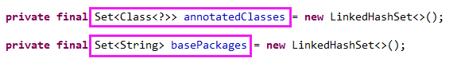
然后又用两个类AnnotatedBeanDefinitionReader和ClassPathBeanDefinitionScanner来负责注册类和扫描包，如下图0607：
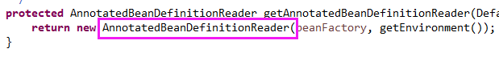
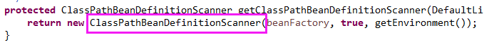
最后就是具体的来执行注册类和扫描包，如下图08：
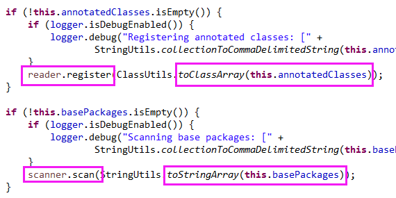
接着再看下SpringBoot的，也就是AnnotationConfigServletWebServerApplicationContext这个类的。
也是先定义两个成员变量，和上面的如出一辙，如下图09：
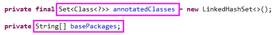
也是用相同的两个类来负责处理，如下图1011：
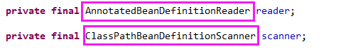
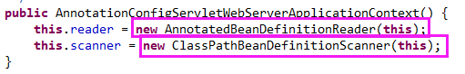
编程新说注：实例化时虽然调用的构造函数不同，但是最终执行的却是相同的构造函数。
最终执行具体的处理也是相同的，如下图12：
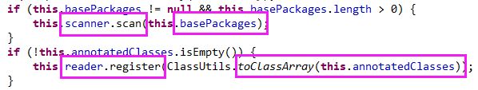
由此可以看出传统Spring和SpringBoot在对待bean定义注册这一块，完全相同，没有任何区别。
其实这很好理解，IOC容器这块内容在Spring中已经发展的相当成熟了，是不会再有人轻易去修改它了。
因此SpringBoot和Spring在本质上没什么差别，注意这里说的是本质。
由于SpringBoot的启动方式是把自身提前把web服务器移后（即采用内嵌web服务器），所以这块是额外新增的内容。
由于SpringBoot采用根据条件（condition）自动配置的方式（AutoConfiguration），所以这块也是额外新增的内容。
这两块都是额外新增的内容，和传统Spring基本没啥关系。
因此在SpringBoot和Spring重叠的部分，其实本质没啥区别。
（END）
>>> 品Spring系列文章 <<<
作者是工作超过10年的码农，现在任架构师。喜欢研究技术，崇尚简单快乐。追求以通俗易懂的语言解说技术，希望所有的读者都能看懂并记住。下面是公众号和知识星球的二维码，欢迎关注！